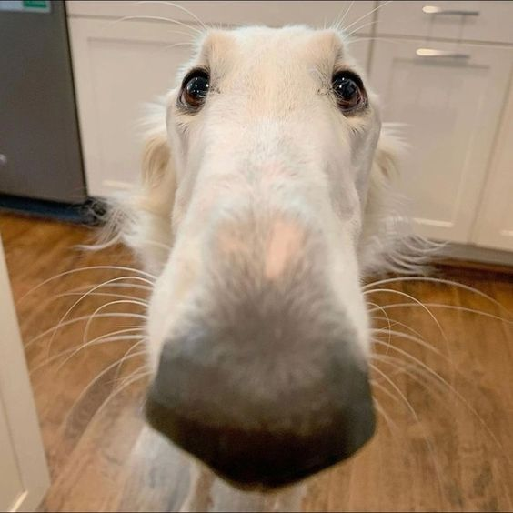

Bienvenue dans ma bibliothèque de Babel
Ce site est dédié à la robotique, la modélisation des systèmes et l’automatisation entre autre. J'y explique à la fois des projets pratiques, des cours théoriques et des ressources pour mieux comprendre certains systèmes complexes.

Dans une démarche de partage, tous les codes, fichiers 3D, références hardware, etc... sont fournis sur les pages des projets respectifs ! Pour plus de détails ou pour toute autre question, contactez-moi ici.